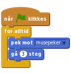
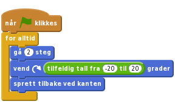
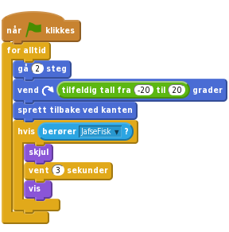
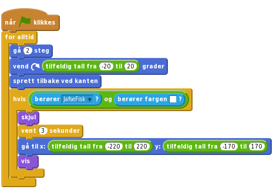
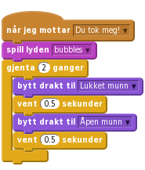

1.5
JafseFisk
Vi skal nå lage et JafseFisk-spill! Målet i spillet er å hjelpe JafseFisk med å spise alle byttedyrene som svømmer rundt i havet.

Først skal vi lage JafseFisk som svømmer rundt i havet!
Scene og så Bakgrunner-fanen. Importer bakgrunnen Natur/underwater3 ved å velge  . Slett så den opprinnelige bakgrunnen
. Slett så den opprinnelige bakgrunnen backdrop1.JafseFisk ved å klikke på katten og deretter på det blå i-symbolet.Drakter-fanen og velge  . Velg drakten
. Velg drakten Dyr/shark-b. Kall drakten Åpen munn. Slett så figurens kattedrakter.i-symbolet igjen, og pass på at figuren bare kan bevege seg fra side til side ved å velge rotasjonsmåte  .
.Få fisken til å følge musepekeren rundt i sjøen ved å lage dette skriptet:

Klikk på det grønne flagget.
Du kan stoppe JafseFisks maniske flipping hvis du sørger for at den bare flytter seg når den ikke er for nær musepekeren (avstand til-klossen ligger i Sansning-kategorien).
![når grønt flagg klikkes
for alltid
hvis <(avstand til [musepeker v]) > (10)>
pek mot [musepeker v]
gå (3) steg](9f796e4fbe53ececea90ea7c38c0c42d295dbc4e.png)
Hvis du vil kan du forandre tallene i skriptet, og se hvordan det forandrer bevegelsene.
Det er på tide å gi JafseFisk noe å spise!
Dyr/Fish2. Gi figuren navnet Byttedyr. som ligger over den røde stopp-knappen.
som ligger over den røde stopp-knappen.Få byttedyret til å bevege seg i tilfeldige retninger. Først skal vi la det bevege seg litt framover, og så snu en tilfeldig valgt vinkel med eller mot klokka, og deretter gjenta.

Klikk på det grønne flagget.
For øyeblikket samspiller ikke JafseFisk og byttedyret med hverandre. Det skal vi gjøre noe med i neste steg.
Prøv å forandre tallene for steg og tilfeldig tall. Hvordan forandrer det byttedyrets bevegelser?
Hva gjør sprett tilbake ved kanten-klossen? Fjern klossen og se hva som skjer.
Nå skal vi la JafseFisk spise byttet!
Når JafseFisk har fanget byttet i munnen skal to ting skje:
Vi starter med å la byttet forsvinne hvis det berører JafseFisk, og så komme tilbake etter 3 sekunder. Bruk berører-klossen for å sjekke om byttet kommer borti JafseFisk. Utvid skriptet på byttedyret slik som dette:

Klikk på det grønne flagget.
Hvordan kan vi sikre at byttet bare forsvinner hvis det berører JafseFisks munn? Tja, vi kan bruke berører farge-klossen og se om den berører det hvite på fiskens tenner.
berører farge-kloss i tillegg til berører-klossen i skriptet ditt. For å velge hvit klikker du på fargen i klossen og deretter på fiskens tenner.Nå kan vi la byttet flytte seg til et tilfeldig punkt på skjermen før det dukker opp igjen ved å bruke en gå til-kloss som vi gir tilfeldige verdier for x og y.

Klikk på det grønne flagget.
JafseFisk må vite når den har spist noe slik at den kan gi fra seg en lyd og bytte drakt.
For at JafseFisk skal vite hva som skjer kan vi la byttet sende melding om at det er spist, før det forsvinner.
![når grønt flagg klikkes
for alltid
gå (2) steg
vend @ (tilfeldig tall fra (-20) til (20)) grader
sprett tilbake ved kanten
hvis ((berører [JafseFisk v]?) og (berører fargen [#FFFFFF]?))
send melding [Du tok meg! v]
skjul
vent (3) sekunder
gå til x: (tilfeldig tall fra (-220) til (220)) y: (tilfeldig tall fra (-170) til (170))
vis](6310f49c51b384eccf9466f384b463da950d70dc.png)
Nå vil vi at JafseFisk reagerer på denne meldingen ved å lage en gomlelyd og klikke med kjevene.
Dyr/shark-a og lyden Effekter/bubbles på JafseFisk. Kall drakten Lukket munn.Legg så til et nytt skript til JafseFisk slik at han kan svare på meldingen Du tok meg! fra byttedyret. Dette skriptet gjør at fisken spiller av boblelyden og bytter drakt til lukket-munn drakten, venter litt og så bytter tilbake.

Nå er JafseFisk klar til å spise, så la oss fylle havet med byttedyr.
lag kopi til du føler at du har fått nok fisk.Klikk på det grønne flagget.
Hvorfor bør vi legge til en vis-kloss i starten av byttedyrets skript? Tenk på hva som vil skje om byttet blir spist og spillet stoppes før det dukker opp igjen. Og hva vil skje om spillet deretter blir startet igjen?
Godt gjort! Du har i grunn fullført spillet! Men det finnes flere muligheter for utvidelse av spillet. Er du klar for en utfordring?
For øyeblikket beveger alle byttedyrene seg likt. Kan du få ett av dem til å bevege seg annerledes?
Hint: Ikke bruke for lang tid på denne oppgaven uten å se på de andre utfordringene i dette prosjektet.
Velg deg ut et byttedyr å eksperimentere med. Hvis de har samme drakt, bytt farge med sett fargeeffekt-klossen. Slik kan du se forskjell fra resten av byttedyrene. Prøv nå å få dette byttedyret til å bevege seg saktere enn de andre.
Hint: Se på klossen gå 2 steg.
Klikk på det grønne flagget.
Hint: Hvis byttet ditt svømmer rundt i sirkler, sjekk verdiene i tilfeldig tall-klossen inne i vend-klossen.
Byttedyrene i dette spillet er skikkelig dumme! De svømmer bare tilfeldig rundt til de blir spist. Ekte fisk svømmer vekk fra rovfisker. Nå vil vi la ett av byttedyrene svømme vekk fra JafseFisk.
Det fins ingen kloss i Scratch som kan gi oss retningen vekk fra en annen figur. Men du kan få en figur til å snu seg i retningen mot en annen, og deretter la den snu seg i motsatt retning. Klossene du trenger er i Bevegelse-kategorien.
Prøv nå å hjelpe et av byttedyrene med å snu seg vekk fra JafseFisk. La den også virre litt mens den svømmer bort! Du vil kanskje oppdage at byttet setter seg fast i et hjørne? Du vil kanskje at byttet bare ønsker å flykte dersom JafseFisk kommer for nære? Hint: Se tilbake på hvordan vi brukte avstand til-klossen tidligere i spillet.
Klikke på det grønne flagget.
Det er ikke nok bare å spise fisk. Hvordan vet du at du er en bedre spiller enn vennene dine? Du må kunne samle poeng, så la oss legge til en poengtavle. Lag en variabel som heter poeng, og endre denne når JafseFisk spiser. Pass på at poengene går tilbake til null ved begynnelsen av spillet. Hvor skal du legge inn disse endringene?
Klikk på det grønne flagget.
Gi deg selv en tidsfrist. Hvor mange fisk kan du spise på 30 sekunder?
Legg til en ny variabel, tid. Lag et nytt skript som setter variabelen til for eksempel 30, for deretter å endre denne med -1, vente 1 sekund, og endre igjen, helt til den når null. Til slutt kan du bruke en stopp-kloss for å slutte spillet.
Klikk på det grønne flagget.
Legg til en belønning med mange bonuspoeng om du klarer å spise alle fiskene samtidig. Hvordan kan du vite hvor mange som er spist?
Hint: En måte å gjøre dette på er å bruke en variabel for å telle hvor mange byttedyr som svømmer i havet.
Klikk på det grønne flagget.
Av og til kan man få glimrende nye idèer ved å gjøre det motsatte av det man allerede har gjort.
Endre spillet slik at du i stedet kontrollerer et byttedyr i et hav av mange JafseFisker. Hvor lenge kan du holde det gående før du blir spist? I stedet for å bruke poeng kan du telle liv. Hva med å gi byttedyret 3 liv og avslutte spillet når de er brukt opp?
Godt gjort, du er ferdig! Nå kan du nyte spillet ditt!
Ikke glem at du kan dele spillet med alle vennene og familien din ved å klikke på Legg ut i topp-menyen!